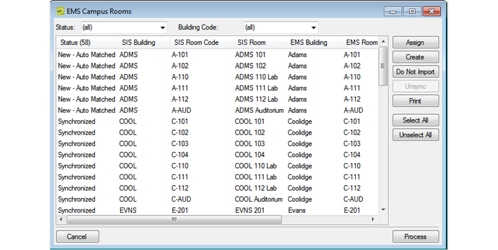

Synchronize Facility Data
You must synchronize your facility data in the following order:
- Buildings
- Room Types
- Rooms
The synchronization process does not update existing facility records after they have been imported and linked. For example, if a room’s code, description, or capacity is changed in the SIS after it has been imported and linked, this information is not changed in the EMS database.
Synchronize Buildings
When you synchronize buildings, the values for Building Code and Description in the SIS are used for any new buildings that are configured in your EMS database. You can edit these values if needed in EMS. See Configure Buildings.
- On the EMS Academic Planning menu bar, click Academic Planning > Configuration > Synchronize Buildings. The EMS Academic Planning Building window opens.
- Set the status of the imported buildings (New - Auto Matched, Matched, Create, or Do Not Import) as described in Facility data synchronization. A window opens that requires you to select a time zone for the referenced buildings.
- Select the correct time zone, and then click Close to return to the EMS Academic Planning Buildings window.
- Click Process. A message opens indicating that the buildings were successfully processed.
- Click OK to close the message and return to the EMS Academic Planning Buildings window.
- Click Cancel or Close (x) to close the window.
Synchronize Room Types
- On the EMS Academic Planning menu bar, click Academic Planning > Configuration > Synchronize Room Types. The EMS Academic Planning Room Types window opens.
- Set the status of the imported room types (New - Auto Matched, Matched, Create, or Do Not Import) as described in Facility data synchronization.
- Click Process. A message opens indicating that the room types were successfully processed.
- Click OK to close the message and return to the EMS Academic Planning Room Types window.
- Click Cancel or Close (x) to close the window.
After you have synchronized the room types, you can edit the names as needed. See Configure Room Types.
Synchronize Rooms
Before you can synchronize room data, at least one setup type must be configured in your EMS database (for example, academic setup), or the synchronization process cannot correctly import the room capacity. To configure a setup type, or confirm that one already has been configured in your EMS database, see Configure Setup Types. After you have configured or confirmed this setup type, set the value for the following EMS system parameter (Area: Campus, Description: Default Setup Type) to this setup type. See Edit System Parameters.
- On the EMS Academic Planning menu bar, click Academic Planning > Configuration > Synchronize Rooms. The EMS Academic Planning Rooms window opens.

- Set the status of the imported rooms (New - Auto Matched, Matched, Create, or Do Not Import) as described in Facility data synchronization.
- Click Process. A message opens indicating that the rooms were successfully processed.
- Click OK to close the message and return to the EMS Academic Planning Rooms window.
- Click Cancel or Close (x) to close the window.
After you synchronize the rooms, you can edit the names as needed. See Configure Rooms.